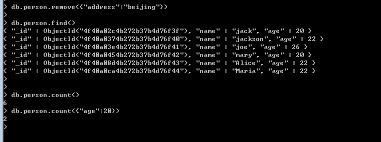
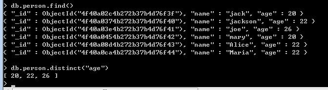
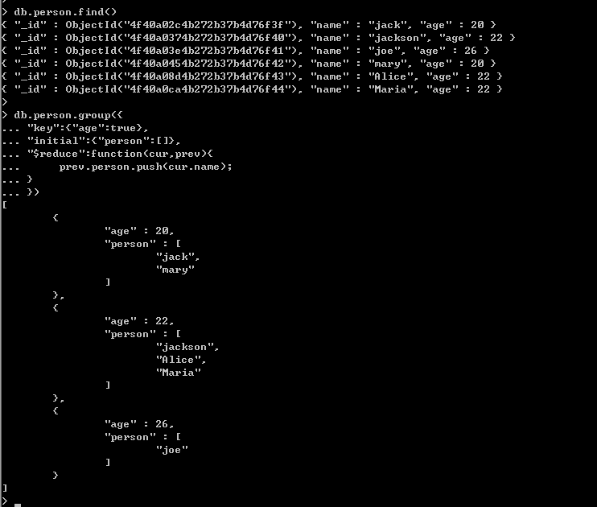
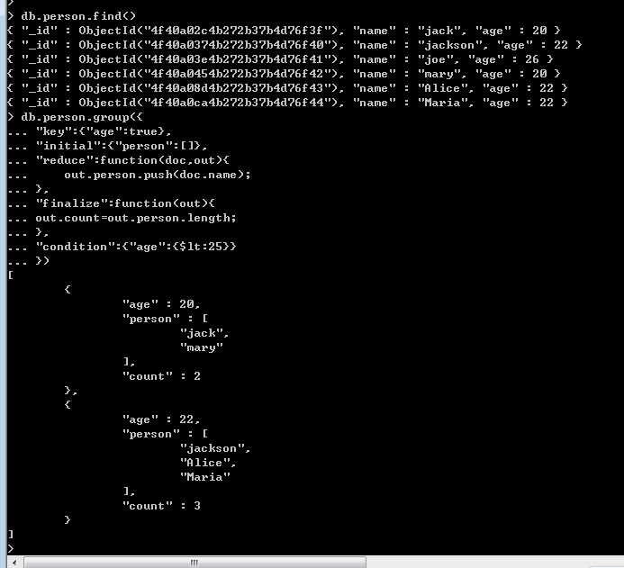
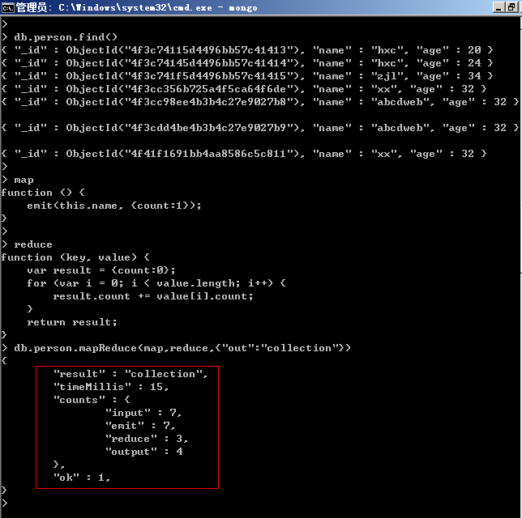
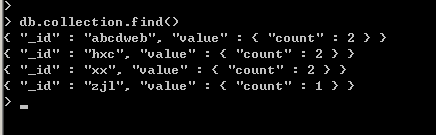
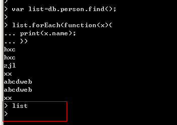
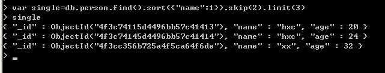

一： 聚合
常见的聚合操作跟sql server一样，有：count，distinct，group，mapReduce。
<1> count
count是最简单，最容易，也是最常用的聚合工具，它的使用跟我们C#里面的count使用简直一模一样。

<2> distinct
这个操作相信大家也是非常熟悉的，指定了谁，谁就不能重复，直接上图。

<3> group
在mongodb里面做group操作有点小复杂，不过大家对sql server里面的group比较熟悉的话还是一眼
能看的明白的，其实group操作本质上形成了一种“k-v”模型，就像C#中的Dictionary，好，有了这种思维，
我们来看看如何使用group。
下面举的例子就是按照age进行group操作，value为对应age的姓名。下面对这些参数介绍一下：
key： 这个就是分组的key，我们这里是对年龄分组。
initial: 每组都分享一个”初始化函数“，特别注意：是每一组，比如这个的age=20的value的list分享一个
initial函数，age=22同样也分享一个initial函数。
$reduce: 这个函数的第一个参数是当前的文档对象，第二个参数是上一次function操作的累计对象，第一次
为initial中的{”perosn“：[]}。有多少个文档， $reduce就会调用多少次。

看到上面的结果，是不是有点感觉，我们通过age查看到了相应的name人员，不过有时我们可能有如下的要求：
①：想过滤掉age>25一些人员。
②：有时person数组里面的人员太多，我想加上一个count属性标明一下。
针对上面的需求，在group里面还是很好办到的，因为group有这么两个可选参数: condition 和 finalize。
condition: 这个就是过滤条件。
finalize:这是个函数，每一组文档执行完后，多会触发此方法，那么在每组集合里面加上count也就是它的活了。

<4> mapReduce
这玩意算是聚合函数中最复杂的了，不过复杂也好，越复杂就越灵活。
mapReduce其实是一种编程模型，用在分布式计算中，其中有一个“map”函数，一个”reduce“函数。
① map：
这个称为映射函数，里面会调用emit(key,value)，集合会按照你指定的key进行映射分组。
② reduce：
这个称为简化函数，会对map分组后的数据进行分组简化，注意：在reduce(key,value)中的key就是
emit中的key，vlaue为emit分组后的emit(value)的集合，这里也就是很多{"count":1}的数组。
③ mapReduce:
这个就是最后执行的函数了，参数为map，reduce和一些可选参数。具体看图可知：

从图中我们可以看到如下信息：
result: "存放的集合名“；
input:传入文档的个数。
emit：此函数被调用的次数。
reduce：此函数被调用的次数。
output:最后返回文档的个数。
最后我们看一下“collecton”集合里面按姓名分组的情况。

二：游标
mongodb里面的游标有点类似我们说的C#里面延迟执行，比如：
var list=db.person.find();
针对这样的操作，list其实并没有获取到person中的文档，而是申明一个“查询结构”，等我们需要的时候通过
for或者next()一次性加载过来，然后让游标逐行读取，当我们枚举完了之后，游标销毁，之后我们在通过list获取时，
发现没有数据返回了。

当然我们的“查询构造”还可以搞的复杂点，比如分页，排序都可以加进去。
var single=db.person.find().sort({"name",1}).skip(2).limit(2);
那么这样的“查询构造”可以在我们需要执行的时候执行，大大提高了不必要的花销。
